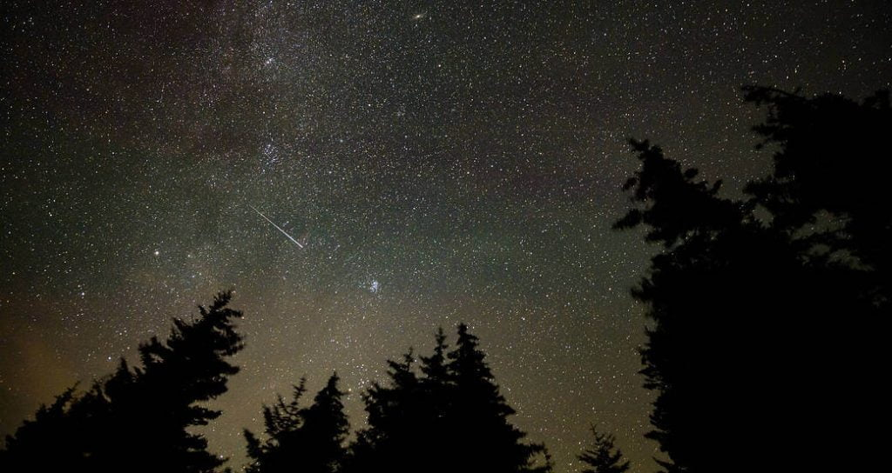

ကြယ်ကြွေတယ် ဆိုတာ တကယ်ကတော့ ကောင်းကင်က ကြယ်ကြီး ပြုတ်ကျလာတာ မဟုတ်ပါဘူး။ ကောင်းကင်မှာ မြင်ရတဲ့ ကြယ်တွေ ဆိုတာက အလင်းနှစ်ပေါင်း များစွာ ကွာဝေးတဲ့ အရပ်က နေလုံးကြီးတွေပါ။ ဒီ ကြယ်တွေဟာ ဘယ်လိုနည်းနဲ့မှ ကမ္ဘာပေါ်ကို ပြုတ်ကျ မလာနိုင်ပါဘူး။
ဒါဆို ကြယ်ကြွေတာ ကြယ်တွေ ပြုတ်ကျလာတာ မဟုတ်ရင် ဘာတွေ ပြုတ်ကျ လာတာလဲ။
ကြယ်ကြွေတာကို အင်္ဂလိပ် လိုတော့ shooting stars လို့ ခေါ်ပါတယ်။ ပညာရပ် စကားနဲ့ ဆိုရင်တော့ meteor လို့ ခေါ်ပါတယ်။
ဒီ meteor ဆိုတာ တကယ်ကတော့ ဥက္ကာခဲ တွေပါ။ တနည်းအားဖြင့် အာကာသ ထဲက ကျောက်တုံး ကျောက်ခဲ လေးတွေ ဖြစ်ပါတယ်။ ဒီ ကျောက်တုံး လေးတွေဟာ ကမ္ဘာ့ လေထုထဲကို ဝင်လာတဲ့ အခါမှာ အလွန် လျှင်မြန်တဲ့ အလျင်နဲ့ ဝင်ရောက် လာကြပါတယ်။ ဒီအခါ ဒီ ကျောက်တုံး လေးတွေ လေထုနဲ့ ပွတ်တိုက်မိပြီး ပူလာကြပါတယ်။ ဒီ အပူကြောင့် ဥက္ကာခဲတွေ မီးလောင်ကြွမ်း တာကို မြေပြင်ကနေ ကြည့်ရင် အဖြူရောင် အလင်းတန်းလေး လှစ်ကနဲ ဖြတ်သွားတာကို လှမ်းမြင်ရမှာ ဖြစ်ပါတယ်။ ဒါကိုပဲ ကြယ်ကြွေတယ်လို့ ခေါ်တာ ဖြစ်ပါတယ်။
တနှစ်ကို ဥက္ကာခဲ ဘယ်နှစ်လုံးလောက် ကမ္ဘာပေါ် ကျလာသလဲသိပ္ပံ ပညာရှင် တွေရဲ့ ခန့်မှန်းချက် အရ နှစ်စဉ် ကမ္ဘာပေါ်ကို ဥက္ကာခဲ တန်ချိန် ၄၈.၅ တန်လောက် ကျရောက်တယ်လို့ ဆိုပါတယ်။ ကံကောင်းတာ ကတော့ ဒီလို ကမ္ဘာ့လေထုထဲ ဝင်ရောက်လာ ကြတဲ့ ဥက္ကာခဲ အားလုံး နီးပါးဟာ ကမ္ဘာ့ လေထုထဲမှာပဲ လောင်ကြွမ်း ပျက်စီး သွားကြတာပဲ ဖြစ်ပါတယ်။
ကြည်လင်တဲ့ ကောင်းကင်ကို ညလုံးပေါက် စောင့်ကြည့်နိုင်မယ် ဆိုရင်တော့ ကြယ်ကြွေတာကို ညစဉ် အများအပြား မြင်တွေ့နိုင်မှာ ဖြစ်ပါတယ်။ ဒါပေမယ့် ဒီလို ကြယ်ကြွေတာ အများစုဟာ အလွန် လျှင်မြန်ပြီး ဘယ်နေရာက ဝင်လာမလဲ ဆိုတာလဲ ကြိုမသိ နိုင်တဲ့အတွက် အားလုံးကို သတိပြုမိဖို့ ဆိုတာကတော့ မလွယ်လှပါဘူး။
ကြယ်မိုးရွာခြင်း
အချို့ ညတွေမှာတော့ ကြယ်ကြွေတဲ့ အရေအတွက်ဟာ ပုံမှန်ထက် သိသိသာသာ ပိုများလာလေ့ ရှိပါတယ်။ ဒီလို အခါမျိုးကိုတော့ ကျွန်တော်တို့က ကြယ်မိုးရွာခြင်း (meteor shower) လို့ ခေါ်ကြပါတယ်။
ဥက္ကာခဲ လူကို လာမှန်နိုင်သလား
ကမ္ဘာ့လေထုထဲ ဝင်ရောက်လာတဲ့ ဥက္ကာခဲ အားလုံး နီးပါးဟာ သဲမှုန် အရွယ်ကနေ ပဲစေ့ အရွယ်လောက် ထိပဲ ရှိကြပါတယ်။ ဒီအရွယ် ဥက္ကာခဲ တွေဟာ ကမ္ဘာ့ လေထုထဲ မှာပဲ မီးလောင် ပျက်စီး သွားကြတာမို့ မြေပြင်ကို ရောက်ရှိလာကြခြင်း မရှိ ကြပါဘူး။ဒါ့ကြောင့် ဥက္ကာပျံ တစ်ခု လာမှန်ဖို့ ဆိုတာ အလွန့်အလွန်ကို ကံဆိုးလွန်းမှ ဖြစ်နိုင်မှာ ဖြစ်ပါတယ်။